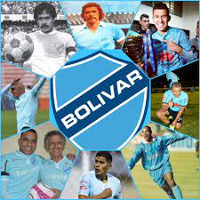
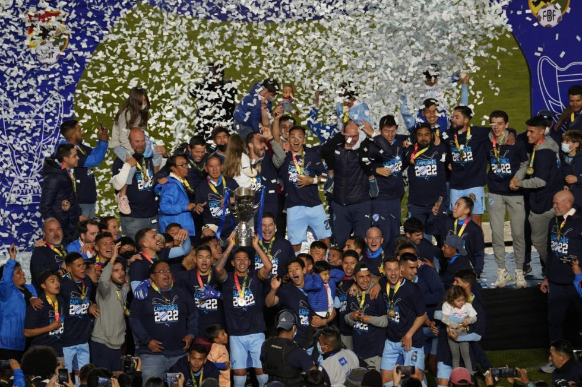

Títulos que consiguió Bolívar a lo largo de su historia

El título que consiguió la academia paceña, la noche de este jueves en Santa Cruz, es el número 23 de la era profesional, y el 29 desde 1950 cuando el fútbol era amateur.
La primera copa que levantó Bolívar fue en 1950, desde entonces hasta ahora los académicos consiguieron 29 títulos, mientras que en el profesionalismo conquistaron su primer título en 1978. Desde aquella oportunidad hasta ahora suman 23 en esta nueva etapa del fútbol boliviano.
La academia paceña sigue como el equipo más laureado del país. Sus títulos lo convierten en uno de los clubes referentes dentro y fuera de Bolivia.
Aquí te dejamos la reseña histórica de los títulos de Bolívar:
Campeón en los años: 1950 , 1953, 1956, 1966, 1968, 1976
Profesionalismo: 1978, 1982, 1983, 1985, 1987, 1988, 1991, 1992, 1994, 1996, 1997, 2002; 2004 Apertura, 2005 Apertura, 2006 Apertura, 2009 Apertura, 2011 Adecuación, 2013 Clausura, 2014 Apertura, 2015 Clausura, 2017 Apertura, 2017 Clausura y 2019 Apertura.
Bolívar golea 3-0 a The Strongest y se proclama campeón del Torneo Apertura 2022

Bolívar goleó este domingo con autoridad por 3-0 a The Strongest y se proclamó campeón del Torneo Apertura 2022, en un partido jugado en el estadio Hernando Siles de La Paz.
El equipo celeste golpeó ni bien empezó el encuentro tras un error defensivo de su clásico rival, que terminó en el primer tanto del brasileño Da Costa, que mandó de cabeza la pelota al fondo de las redes, tras recibir un gran centro de su compatriota Sávio. Apenas habían transcurrido 18 segundos.
Aturdido, The Strongest intentó el empate, pero logró generar chaces claras.
Cuando parecía que el Tigre estaba cerca de arañar el gol, Bolívar volvió a anotar, esta vez gracias a un penal bien pateado por Da Costa (31’). Así terminó el primer tiempo.
En la segunda etapa, las cosas no cambiaron para The Strongest, que fue incapaz de imponerse en el juego y generar alguna chance clara para anotar.
Bolívar aprovechó la desesperación de su rival y en el 69’, tras una gran jugada de Villamil, Sávio anotó de cabeza y puso el 3-0 definitivo.
Así acabó el partido, con el Tigre intentado descontar y con un Bolívar que pudo ampliar el marcador. Tarde perfecta para los celestes.
OTROS EQUIPOS